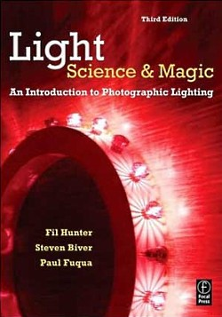

Similar photos


I was recently faced with my first photography project that required lighting.
At the time, I had never used lights before in my photography and, to be completely honest, I was a little scared of the prospect. I had to learn a lot in a short amount of time so I needed a solid resource. After a little research, I bought Light: Science and Magic to get things started. I’m glad I did.
Fil Hunter, Steven Biver, and Paul Fuqua ease the novice reader in with very basic lighting concepts focused on two-dimensional subjects. Each chapter builds until you have an understanding of how to light complicated objects like metal and glass. The diagrams and supporting pictures clearly illustrate the concepts, and the writing is very natural and easy to understand. When I finished the book, I had the know-how and confidence to light just about any project.
This is such a great book because the authors teach the principles of lighting instead of just showing you how to achieve certain effects or lighting styles. These principles can be applied to many situations and utilized to achieve any effect you desire. In other words, you won’t find just a lighting cookbook here. Rather, read this book and you will learn how to think about lighting and understand it from the ground up. This puts you in control of how your photos will look.
If you want to get started with lighting, Light: Science and Magic is an essential read.


3 Comments
February 2nd, 2008 at 8:32 pm
I don’t consider myself a pro but I do have a passion for the craft that is photography and one area that I haven’t fully explored in the field is the lighting aspect of it.
There are slew of books out there to choose from but I’ve been sifting through some without necessarily finding one that explains the subject in a straightforward manner. Thanks for the heads up and review on this book. I purchased it through Amazon already. Twisting my fingers now.
July 30th, 2008 at 10:30 pm
[...] my first set of lighting equipment and taught myself how to light photographs with some help from Light: Science and Magic (highly [...]
October 19th, 2008 at 7:10 pm
[...] Review: Light: Science and M… [...]